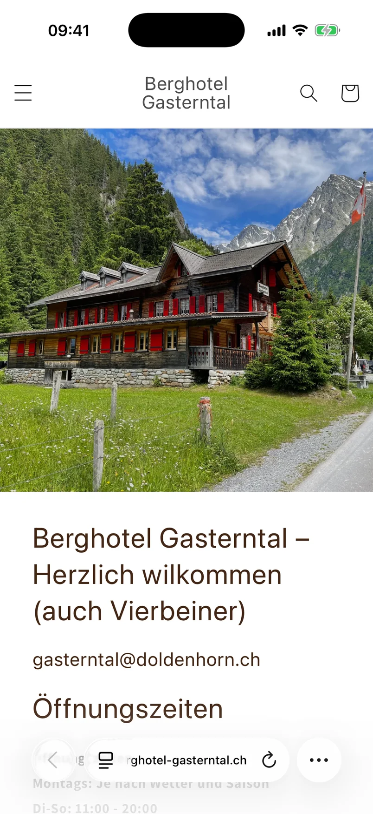

Hinweis 1.1
Google bekommt keine Beschreibung und hält die Seite für englisch.
Keine der zwölf Seiten hat eine Kurzbeschreibung für die Trefferliste. Jede meldet sich als englisch, obwohl der Text zuerst deutsch ist. Keines der 44 Fotos hat eine Beschreibung.
Was wir tun würdenFür jede Seite einen Satz für die Trefferliste schreiben, die Sprache auf Deutsch stellen und die Fotos kurz beschreiben («Berghotel Gasterntal mit roten Fensterläden, Selden»).
Genauer nachlesen
Selbst nachsehenStartseite öffnen und am Rechner mit der rechten Maustaste «Seitenquelltext anzeigen».
Gemessen auf allen 12 Adressen der Sitemap: 0 von 12 Seiten mit <meta name="description">, 12 von 12 mit lang="en", 44 von 44 Bildern mit leerem alt. Die Startseite hat eine H1 («Berghotel Gasterntal»), auf 6 der 12 Seiten (Kontakt, Zimmer, Feste, Restaurant, Lage, Galerie) fehlt sie.
Die Vorschau für soziale Netze (og:description, twitter:description) wiederholt auf der Startseite den Namen.

<html class="no-js" lang="en"><title> Berghotel Gasterntal</title><meta property="og:title" content="Berghotel Gasterntal"><meta property="og:description" content="Berghotel Gasterntal"><meta name="twitter:description" content="Berghotel Gasterntal"> <img src="//berghotel-gasterntal.ch/cdn/shop/files/ IMG_3912.jpg?v=1720271649&width=3840" alt=""
Eine Zeile <meta name="description"> gibt es auf keiner der 12 Seiten. 44 von 44 Bildern tragen alt="".
Was das für Sie bedeutet
Für Ihre Gäste
Ohne eigene Beschreibung zieht Google selbst einen Ausschnitt aus der Seite in die Trefferliste. Was dort unter dem Namen steht, bestimmt im Moment nicht das Haus.
Für Ihr Haus
Als Vorschau beim Teilen in WhatsApp oder E-Mail steht als Beschreibung nur der Name «Berghotel Gasterntal».
Technisch
In Shopify hat jede Seite ein Feld «Suchmaschinen-Vorschau» für Titel und Beschreibung. Die Sprache des Shops steht in den Einstellungen auf Englisch; auf Deutsch gestellt, stimmt die Angabe auf allen Seiten.